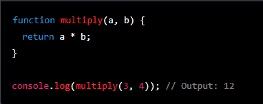
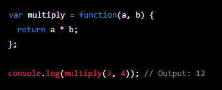
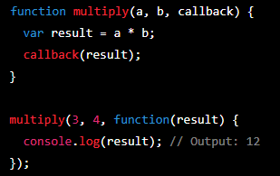
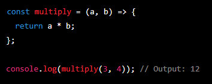
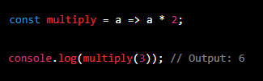

Functions & variables in Javascript.
Functions:
A "normal" function:
Block of code that can be called by name and executed whenever it is needed.
Can accept inputs (parameteres) and return output. Decleared by "function" keyword, followed by function name, parameters and code block.

An anonymous function:
A function without a name. It can be assigned to a variable or passed as an argument to another function. Anonymous functions are commonly used as callback functions.

A callback function:
A callback function is a function that is passed as an argument to another function and is executed after some operation has completed.
It is a way to ensure that code is executed in a specific order, even if some operations take longer than others.

An arrow function:
An arrow function is a more concise way to write a function. It uses the => syntax and can be used as a replacement for anonymous functions.
Arrow functions can be used in the same way as regular functions, but with less code.

A compact arrow function:
A compact arrow function is a further optimization of the arrow function syntax.
It can be used when the function takes only one argument, and its body is a single expression.
In this case, the function does not need curly braces or a return statement.

Variables in Javascript; what possiblies are there and what are the pros and cons!
Variables:
"let":
"var":
"const":